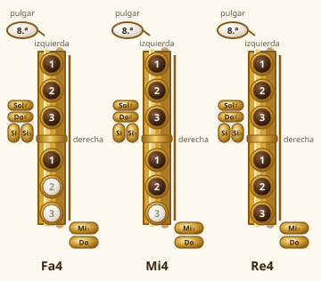
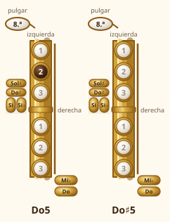
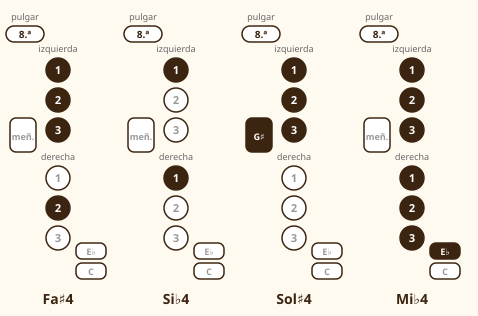
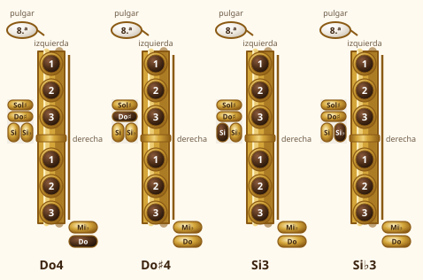

Módulo 6: Más notas: grave y medio
Mano derecha, Do agudo del registro grave y las primeras alteraciones.
Con la mano derecha bajas hacia el Re, y con la izquierda subes hacia el Do y el Do♯. Cada nota nueva es un dedo más o un dedo menos que la anterior. Lo importante: cierres sin escapes de aire.
Ampliar el registro
1. Mano derecha: Fa, Mi y Re

| Nota escrita | Mano izquierda | Mano derecha |
|---|---|---|
| Sol (Sol4) | 1-2-3 | — |
| Fa (Fa4) | 1-2-3 | 1 |
| Mi (Mi4) | 1-2-3 | 1-2 |
| Re (Re4) | 1-2-3 | 1-2-3 |
2. Do y Do♯ del registro grave

💡 Cómo se hace
3. Las alteraciones: Fa♯, Si♭, Sol♯ y Mi♭

| Nota | Dedos | Nota |
|---|---|---|
| Fa♯ | Izq 1-2-3 + der 2 | El Fa♯ «bifurcado» (la derecha deja el 1 y baja el 2) |
| Si♭ | Izq 1 + der 1 | Una alternativa muy usada es la llave «bis» (pregunta a tu profesor/a) |
| Sol♯ | Izq 1-2-3 + meñique izquierdo (G♯) | El meñique pulsa la llave más alta de la mesa |
| Mi♭ | Seis dedos + meñique derecho (E♭) | Meñique derecho en la llave Mi♭ |
4. Las notas graves: Do, Do♯, Si y Si♭
En la parte baja del saxo hay notas que se tocan con los meñiques. Son más difíciles porque los meñiques son los dedos con menos fuerza y precisión. No las trabajes hasta dominar el Re.

5. Practica con melodías
🎼 Au clair de la lune
Canción tradicional francesa (dominio público). Solo usa Sol, La y Si.
🎼 Mary tenía un corderito (Mary Had a Little Lamb)
Canción tradicional (dominio público). El Do agudo (c) se toca con el dedo 2 izquierdo y sin la llave de octava.
🎼 Descendiendo con el Fa♯
En Sol mayor todos los Fa son Fa♯: se tocan con el 123 de la izquierda y el 2 de la derecha.
🎼 Pasando por el Si♭
En Fa mayor todos los Si son Si♭. Fíjate en que la armadura (un bemol) lo indica.
🎼 Las notas graves: Sol, Fa, Mi y Re
Primero el Re (seis dedos) y después sube poco a poco: los dedos de la mano derecha se levantan uno a uno.
6. Entrenadores
Lectura de notas escritas
Aparece una nota escrita en el pentagrama (desde el Si grave hasta el Do agudo). Pulsa su nombre.
Pulsa «Empezar».
Digitaciones
Aparece una digitación. Elige a qué nota escrita corresponde. Puedes escoger el nivel.
Pulsa «Empezar».
🗓️ Cómo practicar las notas nuevas
- Una nota nueva cada día. Tócala larga (4 tiempos) varias veces y comprueba que suena limpia.
- Enlaza con la anterior: toca Sol–Fa–Sol–Fa muy despacio, atento al paso de un dedo.
- Sube y baja por grados: Sol–Fa–Mi–Re–Mi–Fa–Sol, con metrónomo a 60.
- Las alteraciones, aparte: la armadura te dice cuáles son (Fa♯ en Sol mayor, Si♭ en Fa mayor).
⚠️ Errores frecuentes y cómo corregirlos
| Lo que pasa | Por qué | Cómo corregirlo |
|---|---|---|
| Una nota no suena o suena «sucia» | Un dedo no cubre del todo la llave | Cubre con la yema y repasa dónde cae el dedo; comprueba que no hay holgura |
| El Fa♯ me sale como Fa | Bajo el dedo derecho equivocado | El Fa♯ lleva el dedo 2 derecho; el 1 derecho es el Fa natural |
| No salen las notas graves | Poco aire o los meñiques no cierran | Más aire, y practica solo el cambio de meñique |
| Me confundo con el Si♭ | Lo confundo con el Si | En Fa mayor, el Si es siempre Si♭ (índice izquierdo + índice derecho) |